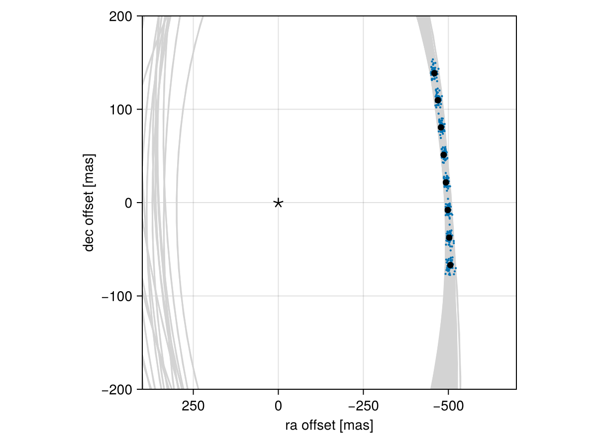

Posterior Predictive Checks
A posterior predictive check compares our true data with simulated data drawn from the posterior. This allows us to evaluate if the model is able to reproduce our observations appropriately. Samples drawn from the posterior predictive distribution should match the locations of the original data.
To demonstrate, we will fit a model to relative astrometry data:
using Octofitter
using Distributions
astrom_dat = Table(
epoch= [50000,50120,50240,50360,50480,50600,50720,50840,],
ra = [-505.764,-502.57,-498.209,-492.678,-485.977,-478.11,-469.08,-458.896,],
dec = [-66.9298,-37.4722,-7.92755,21.6356, 51.1472, 80.5359, 109.729, 138.651,],
σ_ra = fill(10.0, 8),
σ_dec = fill(10.0, 8),
cor = fill(0.0, 8)
)
astrom_like = PlanetRelAstromLikelihood(astrom_dat, name="simulated astrom")
planet_b = Planet(
name="b",
basis=Visual{KepOrbit},
likelihoods=[astrom_like],
variables=@variables begin
a ~ truncated(Normal(10, 4), lower=0.1, upper=100)
e ~ Uniform(0.0, 0.5)
i ~ Sine()
ω ~ UniformCircular()
Ω ~ UniformCircular()
θ ~ UniformCircular()
tp = θ_at_epoch_to_tperi(θ,50420; system.M, a, e, i, ω, Ω) # reference epoch for θ. Choose an MJD date near your data.
end
)
sys = System(
name="Tutoria",
companions=[planet_b],
likelihoods=[],
variables=@variables begin
M ~ truncated(Normal(1.2, 0.1), lower=0.1)
plx ~ truncated(Normal(50.0, 0.02), lower=0.1)
end
)
model = Octofitter.LogDensityModel(sys)
using Random
Random.seed!(0)
chain = octofit(model)Chains MCMC chain (1000×28×1 Array{Float64, 3}):
Iterations = 1:1:1000
Number of chains = 1
Samples per chain = 1000
Wall duration = 3.12 seconds
Compute duration = 3.12 seconds
parameters = M, plx, b_a, b_e, b_i, b_ωx, b_ωy, b_Ωx, b_Ωy, b_θx, b_θy, b_ω, b_Ω, b_θ, b_tp
internals = n_steps, is_accept, acceptance_rate, hamiltonian_energy, hamiltonian_energy_error, max_hamiltonian_energy_error, tree_depth, numerical_error, step_size, nom_step_size, is_adapt, loglike, logpost, tree_depth, numerical_error
Summary Statistics
parameters mean std mcse ess_bulk ess_tail r ⋯
Symbol Float64 Float64 Float64 Float64 Float64 Floa ⋯
M 1.1919 0.0936 0.0042 502.2385 554.8759 1.0 ⋯
plx 50.0004 0.0204 0.0006 1053.3631 582.6267 0.9 ⋯
b_a 11.6417 2.3443 0.2257 117.5446 158.1518 0.9 ⋯
b_e 0.1471 0.1030 0.0075 208.9308 246.0537 0.9 ⋯
b_i 0.6288 0.1758 0.0160 139.1301 105.3045 0.9 ⋯
b_ωx -0.0390 0.7321 0.0536 208.0537 463.4766 1.0 ⋯
b_ωy -0.0210 0.6905 0.0648 133.6659 513.5411 1.0 ⋯
b_Ωx 0.0539 0.7592 0.1337 40.2514 255.1390 0.9 ⋯
b_Ωy 0.0871 0.6652 0.1288 35.9733 358.1999 1.0 ⋯
b_θx 0.0752 0.0107 0.0004 863.5190 524.0374 0.9 ⋯
b_θy -1.0080 0.1067 0.0042 664.5094 566.3604 1.0 ⋯
b_ω -0.2648 1.8578 0.1391 282.3880 493.4876 1.0 ⋯
b_Ω -0.3582 1.7520 0.2423 81.1146 269.7475 1.0 ⋯
b_θ -1.4963 0.0075 0.0002 993.4628 718.5280 0.9 ⋯
b_tp 43145.8753 5149.0415 345.3990 294.1877 198.2965 0.9 ⋯
2 columns omitted
Quantiles
parameters 2.5% 25.0% 50.0% 75.0% 97.5%
Symbol Float64 Float64 Float64 Float64 Float64
M 1.0080 1.1288 1.1956 1.2623 1.3610
plx 49.9619 49.9861 49.9995 50.0144 50.0409
b_a 8.0561 10.0254 11.2419 12.9324 16.9861
b_e 0.0074 0.0608 0.1303 0.2166 0.3731
b_i 0.2211 0.5268 0.6535 0.7546 0.9058
b_ωx -1.0855 -0.7651 -0.0337 0.6885 1.0469
b_ωy -1.0544 -0.6687 -0.0497 0.6437 1.0534
b_Ωx -1.0654 -0.7398 0.1650 0.8104 1.0896
b_Ωy -1.0402 -0.5014 0.2008 0.6837 1.0488
b_θx 0.0565 0.0675 0.0745 0.0819 0.0974
b_θy -1.2391 -1.0759 -1.0017 -0.9333 -0.8169
b_ω -3.0485 -2.0614 -0.1749 1.2097 2.9860
b_Ω -2.9796 -2.2557 0.2544 0.9546 2.8678
b_θ -1.5101 -1.5012 -1.4967 -1.4912 -1.4818
b_tp 30083.5224 40145.7831 44483.5444 46680.4780 50046.4864
We now have our posterior as approximated by the MCMC chain. Convert these posterior samples into orbit objects:
# Instead of creating orbit objects for all rows in the chain, just pick
# every twentieth row.
ii = 1:20:1000
orbits = Octofitter.construct_elements(model, chain, :b, ii)50-element Vector{Visual{KepOrbit{Float64}, Float64}}:
Visual{KepOrbit{Float64}, Float64}(KepOrbit(9.81, 0.211, 0.55, -2.14, 3.26, 44000.0, 1.17), 50.01429737335506, 4.124116844176305e6)
Visual{KepOrbit{Float64}, Float64}(KepOrbit(14.8, 0.126, 0.797, -0.529, 0.256, 33800.0, 1.14), 49.974764289087986, 4.127379271944548e6)
Visual{KepOrbit{Float64}, Float64}(KepOrbit(9.48, 0.171, 0.549, 0.976, 0.616, 45400.0, 1.27), 49.99074933812777, 4.1260595005680164e6)
Visual{KepOrbit{Float64}, Float64}(KepOrbit(12.7, 0.118, 0.83, 0.927, 0.38, 41800.0, 1.26), 50.053429603964275, 4.1208925717801363e6)
Visual{KepOrbit{Float64}, Float64}(KepOrbit(11.7, 0.0348, 0.645, -0.611, 3.75, 46800.0, 1.14), 49.97642565497348, 4.127242065511133e6)
Visual{KepOrbit{Float64}, Float64}(KepOrbit(19.5, 0.33, 0.833, 0.648, 3.66, 49000.0, 1.1), 49.99301947600019, 4.125872139931786e6)
Visual{KepOrbit{Float64}, Float64}(KepOrbit(12.2, 0.115, 0.709, -3.1, 0.975, 49000.0, 1.2), 49.9888832194875, 4.1262135291449516e6)
Visual{KepOrbit{Float64}, Float64}(KepOrbit(12.0, 0.097, 0.687, 3.06, 0.997, 48900.0, 1.29), 50.011272631448875, 4.1243662757221996e6)
Visual{KepOrbit{Float64}, Float64}(KepOrbit(14.5, 0.0188, 0.858, 0.074, 3.65, 47200.0, 1.32), 49.985765490215684, 4.1264708907473083e6)
Visual{KepOrbit{Float64}, Float64}(KepOrbit(11.0, 0.108, 0.714, -1.36, 3.94, 46300.0, 1.25), 50.037768803835895, 4.122182327028221e6)
⋮
Visual{KepOrbit{Float64}, Float64}(KepOrbit(11.9, 0.2, 0.754, -0.859, 3.94, 47400.0, 1.27), 49.98347784073762, 4.126659751534657e6)
Visual{KepOrbit{Float64}, Float64}(KepOrbit(12.7, 0.177, 0.783, 2.89, 1.06, 48600.0, 1.16), 49.976827065186384, 4.12720891580529e6)
Visual{KepOrbit{Float64}, Float64}(KepOrbit(10.4, 0.072, 0.564, -1.22, 4.04, 46900.0, 1.12), 50.021447100882895, 4.1235273707916318e6)
Visual{KepOrbit{Float64}, Float64}(KepOrbit(8.88, 0.159, 0.395, -2.43, 4.02, 45600.0, 1.1), 50.001193564396516, 4.125197651161027e6)
Visual{KepOrbit{Float64}, Float64}(KepOrbit(14.5, 0.0647, 0.835, 0.0191, 3.59, 46900.0, 1.18), 50.00532412954554, 4.1248568994921325e6)
Visual{KepOrbit{Float64}, Float64}(KepOrbit(13.3, 0.207, 0.868, -0.828, 3.68, 46100.0, 1.18), 49.997568748694555, 4.125496727328006e6)
Visual{KepOrbit{Float64}, Float64}(KepOrbit(14.9, 0.061, 0.858, 0.0971, 3.54, 46900.0, 1.21), 49.99567529365422, 4.1256529696934978e6)
Visual{KepOrbit{Float64}, Float64}(KepOrbit(11.7, 0.106, 0.671, -0.722, 3.77, 47100.0, 1.27), 50.01626535372426, 4.1239545733443624e6)
Visual{KepOrbit{Float64}, Float64}(KepOrbit(8.89, 0.13, 0.0613, 2.82, 4.82, 45000.0, 1.01), 49.979832445121936, 4.12696073908563e6)Calculate and plot the location the planet would be at each observation epoch:
using CairoMakie
epochs = astrom_like.table.epoch' # transpose
x = raoff.(orbits, epochs)[:]
y = decoff.(orbits, epochs)[:]
fig = Figure()
ax = Axis(
fig[1,1], xlabel="ra offset [mas]", ylabel="dec offset [mas]",
xreversed=true,
aspect=1
)
for orbit in orbits
Makie.lines!(ax, orbit, color=:lightgrey)
end
Makie.scatter!(
ax,
x, y,
markersize=3,
)
fig
Makie.scatter!(ax, astrom_like.table.ra, astrom_like.table.dec,color=:black, label="observed")
Makie.scatter!(ax, [0],[0], marker='⋆', color=:black, markersize=20,label="")
Makie.xlims!(400,-700)
Makie.ylims!(-200,200)
fig
Looks like a great match to the data! Notice how the uncertainty around the middle point is lower than the ends. That's because the orbit's posterior location at that epoch is also constrained by the surrounding data points. We can know the location of the planet in hindsight better than we could measure it!
You can follow this same procedure for any kind of data modelled with Octofitter.